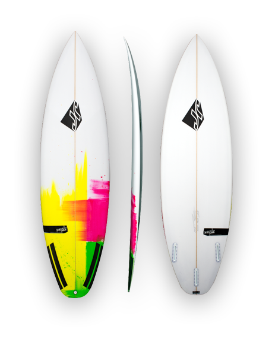

Ride every wave as if it's your last
We love the motion of the ocean

JR Surfboards The Donny Stoker
Yellow/Green Rail Fade
Easy to ride, care free surfing craft that's fun for everyone, paddles well, super fast down the line and great for any level of surfing depending on who rides it. The Donny Stoker, a rework on design from stokesys first ever pro model. A super easy to surf and fun board. The Donny Stoker is a board for total freesurfing expression.